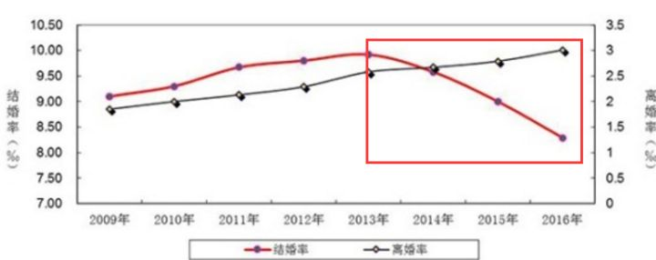

长按二维码
关注高小猫

中国婚姻率正在稳步下降
在中国传统的农耕文明中，女性本身的地位不高，她们的地位主要来自于她们在养育子女方面做出的贡献。因此如果一个女性要有地位，就必须依靠生的多，生的好。
不仅如此，如果有私生子，母亲的地位就没有办法得到保障。在这样的社会中，婚姻率自然是非常高的，人们也会自然而然地把不结婚的女性当做异类。
现代社会不再有这样的需要，因为女性的价值更多的是她们在职场上的价值。相比起生育带来的家庭地位的提升，在职场上升职加薪显得更加直接了当，风险更低，回报更高。自然而然地，生育这件事情更多地变成了一种个人的好恶，婚姻自然也受到了牵连。
中国未来的趋势可以参照日本，韩国，北欧等国的情况，必然是结婚率与出生率逐步下降，直到中国的农耕文化逐渐消失。
尽管这样的大势不可避免，难道婚姻对于个人来说就毫无价值吗？根据UCLA的家庭与夫妇心理学一课的内容所述，婚姻其实对于个人来说有诸多好处。
既然每个人在世都想追求幸福，而幸福的一大源泉就来自于被爱与爱人。作为现代社会中爱情最常见的形式，婚姻是我们每个人总会犹豫一下下的选择。本文就想讲一讲婚姻或长期关系带给人的好处。

好的婚姻带来财富
根据哈佛大学一项持续了79年的研究显示，在1）个人的智商，2）父母的收入及教育程度 3）好的长期关系 这三个指标中，好的长期关系与高收入的相关度最高，是对财富最为有效的预测指标。
俄亥俄州的Jay Zagorsky教授曾在“婚姻对财富的影响”的研究报告中指出：
已婚人士的财富平均而言是单身人士的两倍。也就是说，一个已婚家庭的财富是一个单身人士的财富的四倍。
已婚人士的财富增长要比单身人士高77%。
离婚对双方的财富状况都有巨大的打击，往往会把在婚姻中的财富洗劫一空。
至于这些结论背后的原因很复杂。首先结婚的人士往往本身要比未婚人士更加富有，其次房租以及水电费往往可以减少许多。家务量相对来说会比一个人的时候更少，车子以及家里设备的费用也可以缩减。
不仅如此，已婚人士可以互相支持对方接受更好的教育，得到一个更高的文凭，或者从事高风险的商业活动。个人的医疗保险往往可以惠及家属，当然由于已婚人士的健康状况往往更好，他们的医疗费用也会相对更少。
好的婚姻带来健康与长寿
最近一项针对英国2.5万人的研究显示，在心脏病发病人群中，已婚人士的死亡率要比未婚人士低14%，而且已婚人士的出院时间平均要比未婚人士早2天。
一项针对男性的研究发现，已婚男性一般抽烟喝酒更少，吃得也更加健康。可以想象这样的男性自然而然会更加健康。
一项针对10亿人的统计结果显示，已婚人士要比未婚人士的死亡率下降10-15%。
研究者们猜测，可能是因为在长期关系中，你会得到另外一个人的关照，而且互相之间会有一定的督促作用，这都会有助于健康以及长寿。
好的婚姻带来好心情
芝加哥大学全国民意研究中心曾经追踪调查了3万5千个美国人30年的生活，发现其中40%的已婚人士说他们非常开心，而只有24%的未婚，离婚，分居，寡居的人表示非常开心。婚姻对于快乐的推动作用如此之大，超越了年龄，收入，性别，种族等等其它的因素。
当然这里并没有排除一个因素，即如果一个人本来比较容易开心，他结婚的概率要相对更大。然而即便考虑到这个因素，已婚与未婚的快乐差别是如此之大，也让我们相信婚姻本身一定带来了额外的快乐。
所以在我们强调独立意识的同时，我们也不能忽略一段好的婚姻本身能带来的种种优点。婚姻不仅仅是我们用于孕育下一代的摇篮，对于我们个人来说，它也是我们提升生活质量的相当重要的选项。
长按二维码
关注高小猫